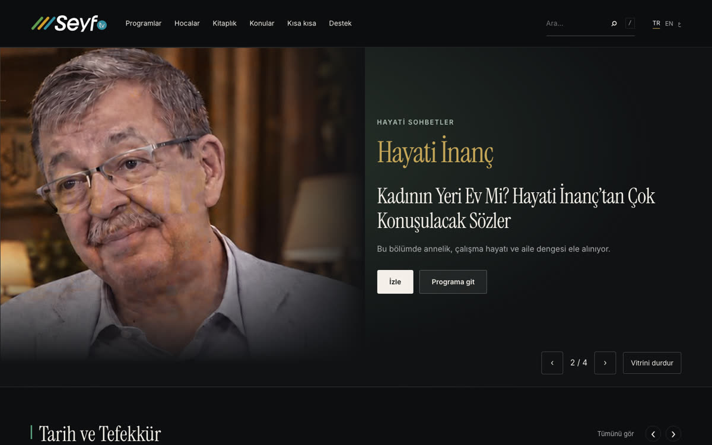
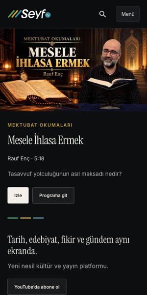
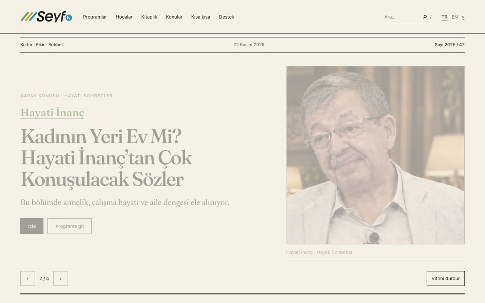
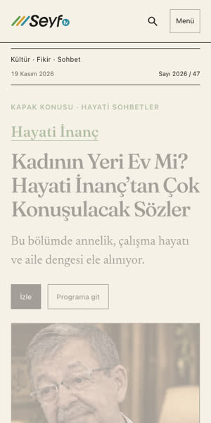
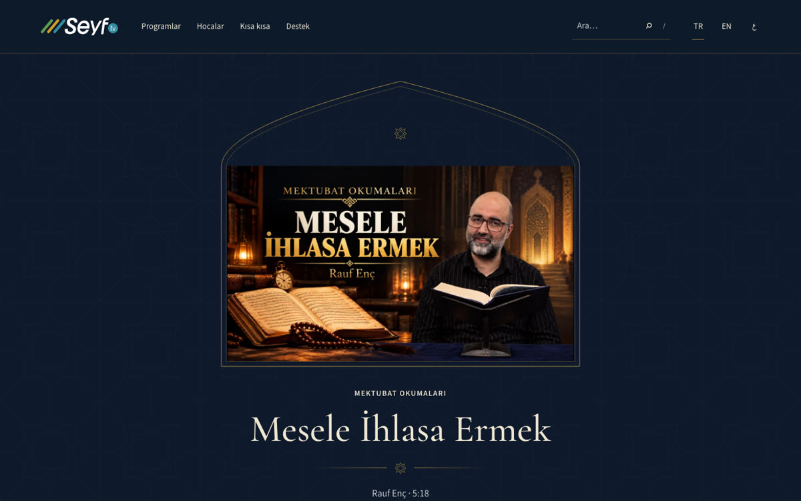
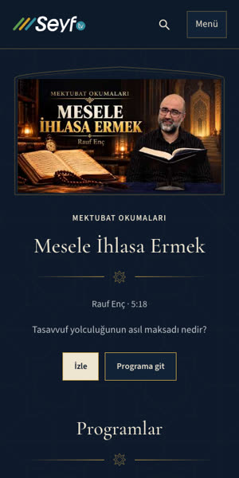
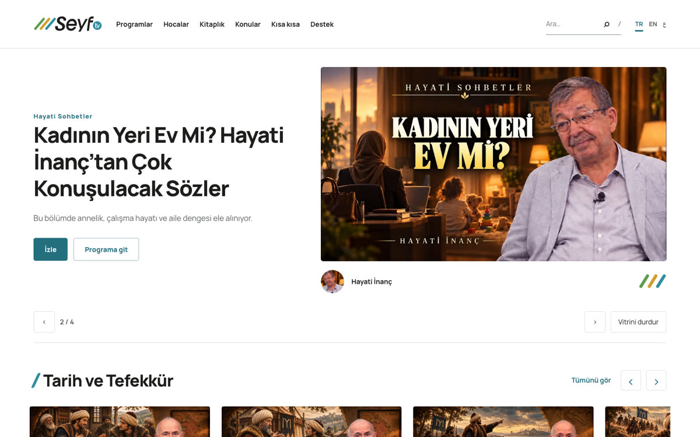
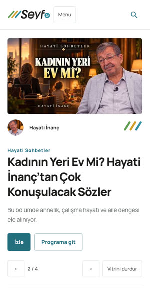

Tasarım 1
Gece Sineması
Koyu zemin ve büyük kapak görselleri. Programlar Apple TV ya da Criterion'daki gibi sıra sıra şeritlerde duruyor. Arayüz geri çekiliyor, video ve hoca öne çıkıyor.
Dördü de aynı siteyi taşıyor: kanalın 266 videosu, 140 kısa videosu, 14 programı ve 11 hocası. Ana sayfada önce Prof. Dr. Ahmet Şimşirgil, ardından Hayati İnanç geliyor; öbür programlar izlenme sırasıyla diziliyor. Videolar sitenin içinde izleniyor; her bölümün dakika damgalı başlıkları ve yazılı metni var. Siteyi Türkçe, İngilizce ve Arapça okumak mümkün. Tasarımlar yalnız görünüşte ve sayfa düzeninde ayrılıyor; birini seçin, ona göre olgunlaştıralım.


Koyu zemin ve büyük kapak görselleri. Programlar Apple TV ya da Criterion'daki gibi sıra sıra şeritlerde duruyor. Arayüz geri çekiliyor, video ve hoca öne çıkıyor.


Krem zemin, ince çizgiler ve kitap harfleri. Ana sayfa bir dergi kapağı gibi açılıyor. Bölüm sayfasında konuşma bir makale gibi okunuyor; aşağı inince video köşede küçük oynamaya devam ediyor.


Lacivert zemin ve altın çizgiler. Klasik sanatımızın geometrisi (sekiz köşeli yıldız, kemer, köşebent) modern bir düzenle buluşuyor. Programlar levha gibi diziliyor.


Seyf TV'nin kendi kurumsal kimliği: beyaz zemin, siyah metin, ana renk turkuaz; yeşil ve hardal destek renkleri. Logodaki üç eğik çizgi sitenin imzası oluyor. Sade, modern bir yayın kuruluşu sitesi.